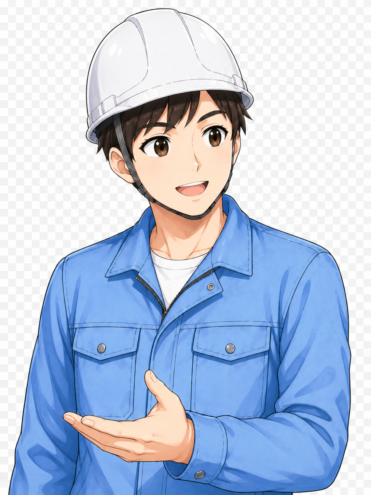
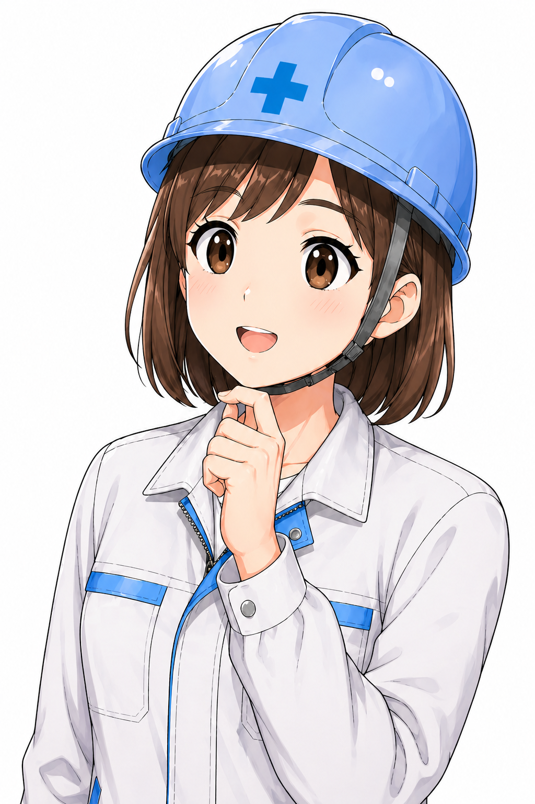
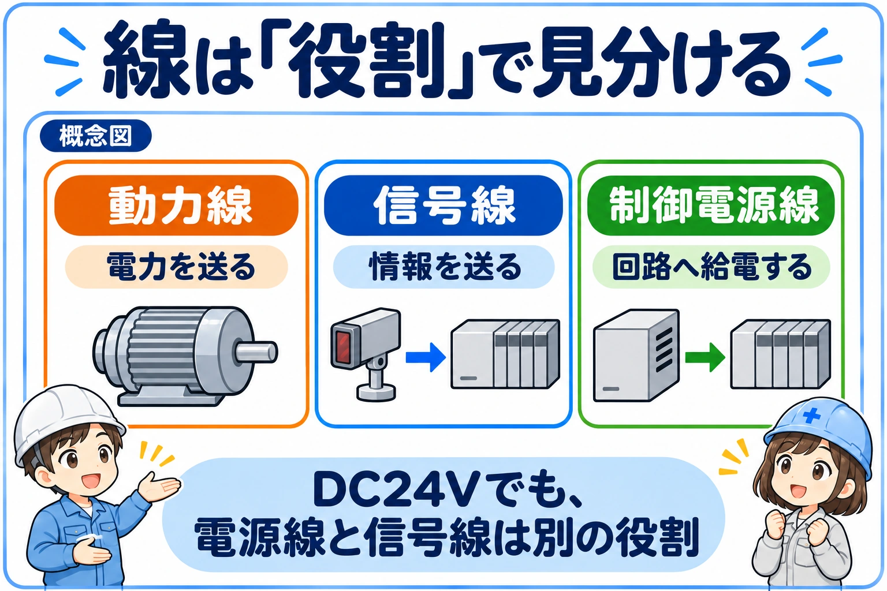
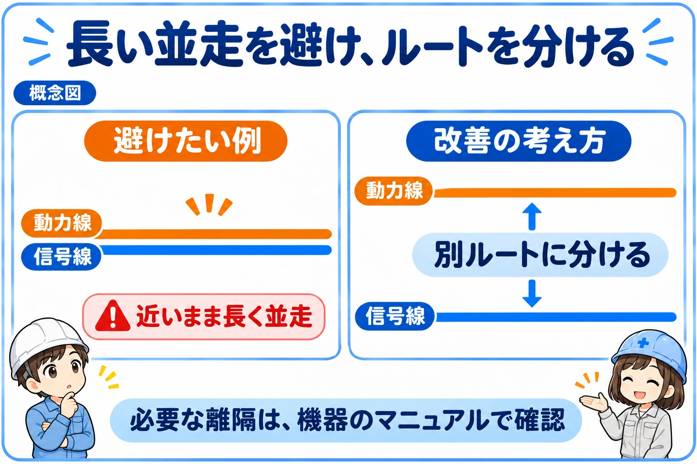
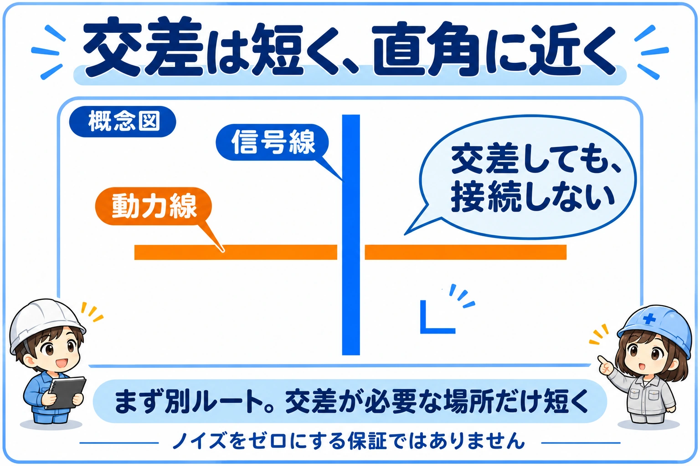
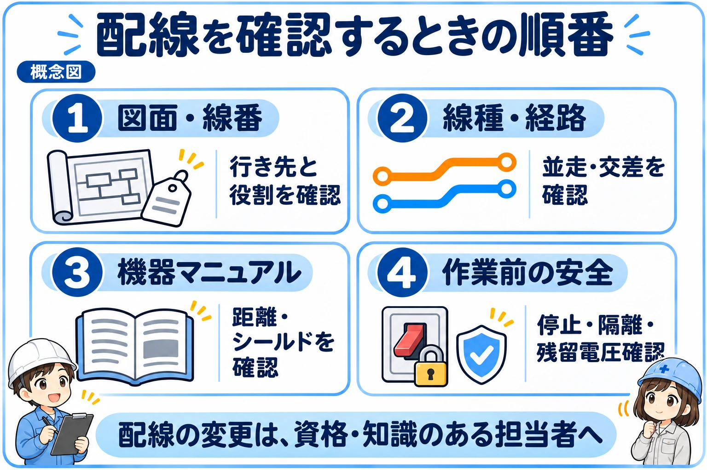

動力線とは？信号線との違いは「運ぶもの」
最終内容更新：
動力線は機器を動かす電力を送り、信号線は状態・指令・測定値などの情報を伝えます。たとえば、モーターへ電力を送る線と、センサーの検出結果をPLCへ伝える線では役割が違います。
分ける理由は、見た目の整理だけではありません。大きな電流の変化やインバータの高速なスイッチングによって生じる電気的な影響が、近くの信号回路へ伝わることがあるためです。通信の異常や測定値のばらつきを防ぐには、機器の配置と配線経路も考えます。
電圧・色・太さだけでは決まらない
同じDC24Vでも、センサーの電源、検出信号、電磁弁を駆動する線は役割が異なります。接続先・図面・信号の方式をそろえて分類しましょう。「低電圧ならノイズと無関係」「信号線ならすべて同じ扱い」とは限りません。
これは配線の考え方を学ぶ記事です
通電中にダクトを開けたり、端子や配線へ触れたりしないでください。点検・変更は権限と必要な知識を持つ担当者が設備の手順に従い、停止・電源隔離・再投入防止・無電圧確認を行ってから実施します。非常停止だけでは電源隔離になりません。インバータ等は電源を切っても電圧が残るため、メーカー指定の待機時間と確認方法を守ります。

先輩動力線と信号線は、同じダクトにぎゅうぎゅうに入れればいいわけじゃないよ。ノイズの影響を考えて、ルートを分けるのが大事なんだ。

後輩見た目をきれいにするだけじゃなくて、ノイズを拾わないように分けるんですね。
まずは配線を「役割ごと」に分類する

盤内の線を「動力か、それ以外か」の二つだけに分けると、制御電源や出力負荷の影響を見落としがちです。最初に図面の回路名と接続機器を確認し、次の表のように整理すると配線ルートを考えやすくなります。
動力線・制御電源・信号線の代表例
| 役割 | 代表例 | 分けて確認すること |
|---|---|---|
| 動力 | モーター主回路、インバータ出力、ヒーター回路 | 負荷電流、スイッチング、メーカー指定の配線経路 |
| 制御電源 | PLC・センサーへのDC24V供給と0V | 供給先、電源分岐、戻り回路。信号線と同じものとは扱わない |
| デジタル入力 | スイッチやセンサーからPLCへ入るON/OFF | 入力方式、COM、線番、入力機器と電源の関係 |
| デジタル出力 | PLCからリレー・電磁弁・ランプへの指令 | 実際につながる負荷。コイルを駆動する回路は入力信号と分けて検討 |
| アナログ | 4–20mA、0–10V、ロードセル等 | 信号レベル、方式、ケーブル指定。すべてが同じ微小電圧信号ではない |
| 通信・パルス | 産業用ネットワーク、エンコーダ信号 | 通信方式、専用ケーブル、配線長、曲げやシールドの指定 |
「信号線どうし」でもまとめてよいとは限らない
入力と出力、アナログとデジタルなどは、それぞれ扱う信号や接続機器が違います。特に出力先がコイル負荷の場合は、ON/OFF時の影響も検討します。分類は図面を読む入口であり、同じ行にある線を無条件に束ねてよいという表ではありません。
配線ルートは、長い近接・並走を減らす

動力系の線と信号系の線を、同じ束やダクト内で長く近接させる構成は避けたい配置です。別経路にして、ノイズの影響を受けやすい回路との近接区間を減らすことを考えます。
「左が動力、右が信号」といった配置は一例にすぎません。機器、端子台、盤外への引出口まで含めて経路を追い、途中だけ離れていても最後に同じ束へ戻っていないか確認します。
ダクトのふたは、ノイズを遮る壁ではない
別のダクトに入れただけで必要な分離が成立するとは限りません。同じダクトの収容可否、隔壁や金属部の扱いは、機器のマニュアルと設備の設計条件で確認します。見た目だけを整えたり、任意の板を追加したりして適合と判断しないでください。
交差と離隔は、機器の指定を確かめる

どうしても交差する場合は、近接区間を長くしない取り回しを検討します。直角に近い短い交差は一般的な考え方ですが、「90度なら必ず問題ない」という保証ではありません。
離隔距離を「必ず何cm」と覚えない
電圧、電流、信号方式、ケーブル、周辺機器によって条件は変わります。PLC・インバータ・サーボ・センサー等の該当型式のマニュアルで、どの配線間に対する指定かを確認します。機器本体との距離と、ケーブルどうしの距離も混同しないことが大切です。
1. 接続先を確定
図面・線番・端子番号と機器の型式を照合します。
2. 条件を読む
ケーブル種別、分離、離隔、引回しの指定を確認します。
3. 経路を追う
機器から端子台・引出口まで近接区間を確認します。
4. 設計に照合
図面・施工基準と合わせ、変更は担当者が判断します。
シールドは分離の代わりになるとは限らない
シールドを使う場合も、接続箇所や処理方法は機器・通信方式の指定に従います。片側接地・両側接地のどちらかを全設備へ一律に当てはめません。保護接地をノイズ対策の試行として外すこともしないでください。PE・FG・SGの違いとシールド線の基本も合わせて確認できます。
現場では「症状」と「周辺の動き」を分けて記録する

測定値がふらつく、通信が途切れる、入力が不安定になる場合でも、配線ノイズと即断はできません。電源、接続、設定、センサー本体など別の原因も考えられます。
まず安全に確認できる表示や履歴から、「どの信号に」「いつ」「何が起きたか」を整理します。モーターの始動時だけか、インバータへの電源投入時か、最近の機器増設後かなど、周辺条件との関係も手掛かりになります。ただし、同時に起きたというだけでは原因の証明になりません。
担当者へ伝えるときのメモ例
「ノイズが出る」ではなく、「圧力の表示値がモーター始動の時に変動する。発生時刻と機器の運転状態を記録した。配線経路と使用型式を確認したい」のように、観察した事実と未確認事項を分けます。
配線を分けても症状が残る場合は、電源側や共通の戻り回路など、別の伝わり方も含めて切り分けます。制御盤のノイズ対策・誤動作の切り分けガイドへ進むと、発生源・経路・影響を受ける機器の順で整理できます。
まとめ：役割を分け、指定に沿って経路を考える
動力線は電力を送り、信号線は情報を伝えます。制御電源や入出力の違いも区別して、ノイズ源になり得る回路と影響を受けやすい回路を整理しましょう。
覚えるのはこの3点
- 色や太さだけでなく、接続先と回路の役割で分類する。
- 長い近接・並走を避け、端子台や引出口まで経路を確認する。
- 離隔・交差・シールドの条件は、個別機器の資料と設備設計で確認する。
参考にしたメーカー公式資料
公式資料確認日：
オムロン：FAコントローラ共通 FAコントローラ制御盤の設置についての「制御盤の電気的環境」「配線ルート」を確認しています。一般的な分離の考え方の参照です。掲載数値・個別の接地方法をすべての設備へ適用せず、使用機器の現行マニュアルを優先してください。
ノイズ対策を全体から切り分けたいとき
この項目だけで原因を決めず、制御盤のノイズ対策・誤動作の切り分けガイドで、発生源・伝搬経路・影響を受ける機器の順に整理できます。